Adenylate kinase 1,656 heavy atoms moving between the open (PDB 4AKE) and closed (PDB 1AKE) states, from a real transition trajectory.
Molecular dynamics
Molecular dynamics simulation
GROMACS simulations from 100 ns to 2,000 ns, up to ten in parallel, with about 3 days per 100 ns. Below is every graph from one real BioInfoX run: a 300-residue vaccine construct simulated for 100 ns and analysed with our standard pipeline.
The run
- System
- 300-residue multi-epitope vaccine construct in water
- Software
- GROMACS 2026.3; analysis with GROMACS tools and MDTraj
- Force field
- CHARMM36m with CHARMM-modified TIP3P water
- Box
- Dodecahedron, 1.2 nm from protein to wall, neutralised with 0.15 M NaCl
- Equilibration
- 200 ps NVT, then 500 ps NPT with heavy-atom restraints
- Production
- 100 ns NPT at 310 K and 1 bar, 2 fs time step, 10,000 frames saved
- Turnaround
- About 3 days for a 100 ns run like this one. We run 100 ns to 2,000 ns simulations, up to ten in parallel.
Protein–ligand projects
Binding, not just stability
Most simulation projects are a protein with a drug candidate or phytochemical. On top of the graphs below, protein–ligand projects receive:
- 01
Ligand RMSD
Whether the ligand stays in the pocket for the whole run, fitted to the protein backbone.
- 02
Contacts and hydrogen bonds
Which residues hold the ligand, and for what fraction of the simulation.
- 03
MM-PBSA and MM-GBSA binding free energy
ΔGbind split into van der Waals, electrostatic, polar and non-polar solvation terms.
- 04
Per-residue energy decomposition
The pocket residues that contribute most to binding.
The written report
Written for your manuscript
Every project comes with methods and results you can adapt for your paper. These excerpts, lightly shortened, are from the report of the run on this page.
All-atom molecular dynamics was performed with GROMACS 2026.3 using the CHARMM36m force field and the CHARMM-modified TIP3P water model. The protein was placed in a dodecahedral box with a minimum solute–wall distance of 1.2 nm, solvated, and neutralised with 0.15 M NaCl. The system was energy-minimised by steepest descent, then equilibrated for 200 ps in the NVT ensemble and 500 ps in the NPT ensemble with position restraints on the protein heavy atoms. Production dynamics were run for 100 ns in the NPT ensemble at 310 K (V-rescale thermostat) and 1 bar (C-rescale barostat) with a 2 fs time step.
The temperature averaged 310.0 K and the density 1024.1 kg/m³ with no systematic drift. Backbone RMSD relative to the equilibrated structure plateaued at 1.222 ± 0.347 nm, and the radius of gyration remained at 2.109 ± 0.132 nm, indicating that the fold neither unfolded nor collapsed. Principal component analysis showed that the first two eigenvectors accounted for 72.0% of the total fluctuation; the free-energy landscape projected onto them displayed a dominant basin with limited conformational spread.
The system and the run
What was simulated, and was the simulation itself sound?
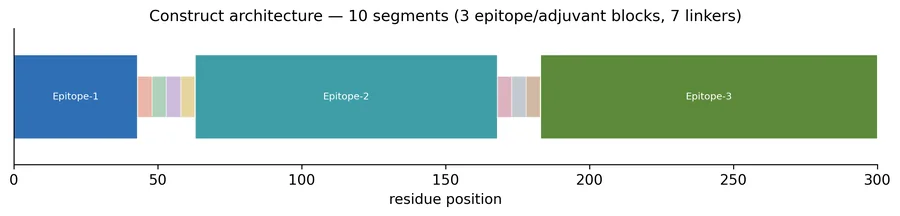
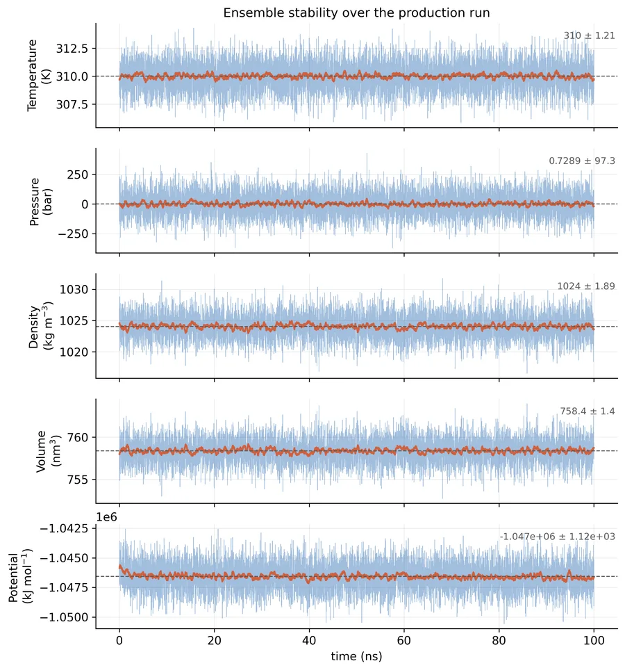
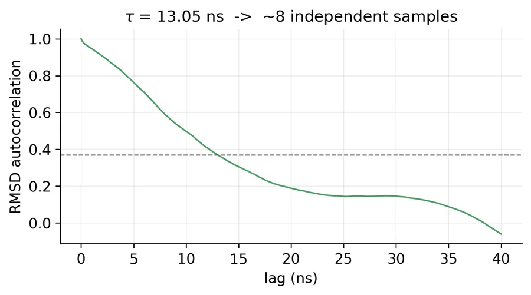
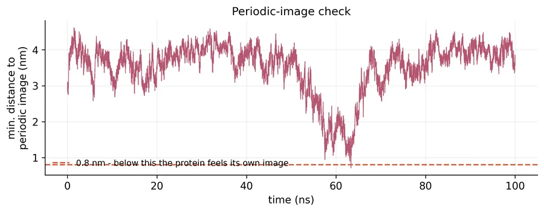
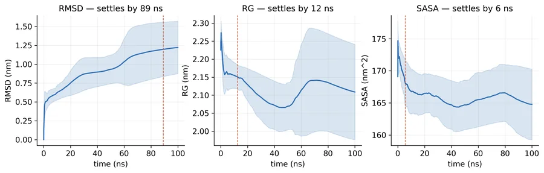
Stability and flexibility
Did the structure hold its fold, and which parts move most?


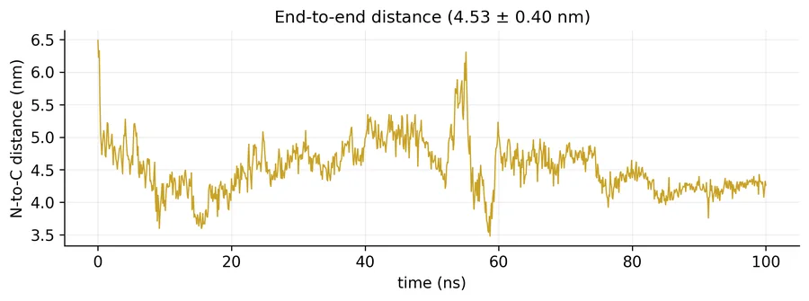
Structure and contacts
Which structural elements were kept, and which interactions hold them together?

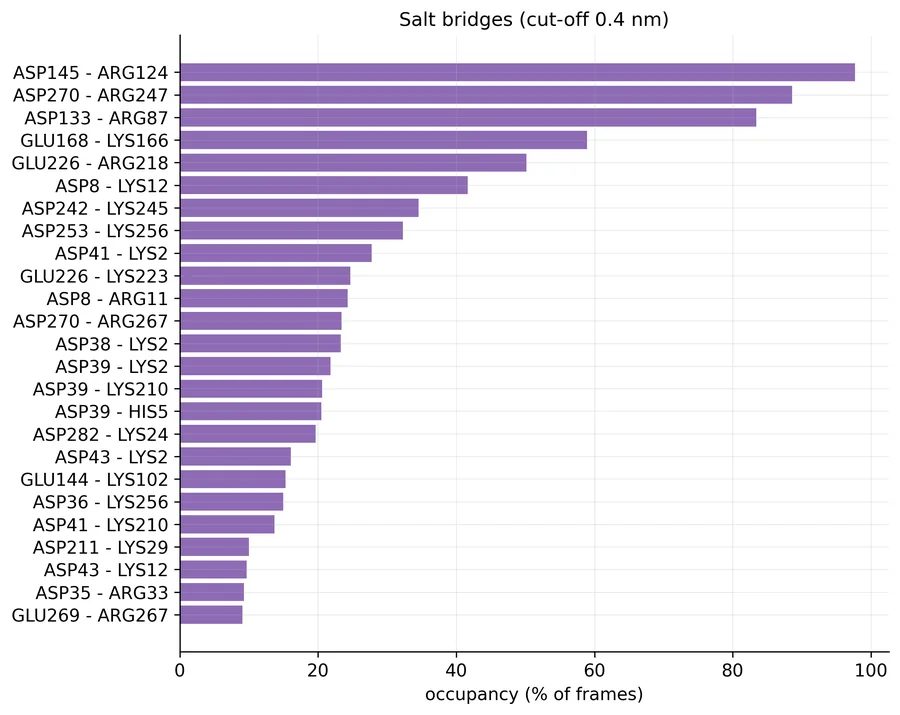
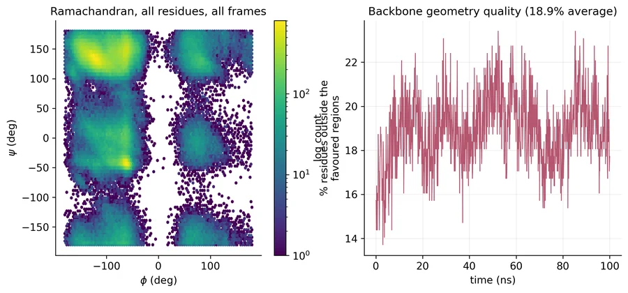
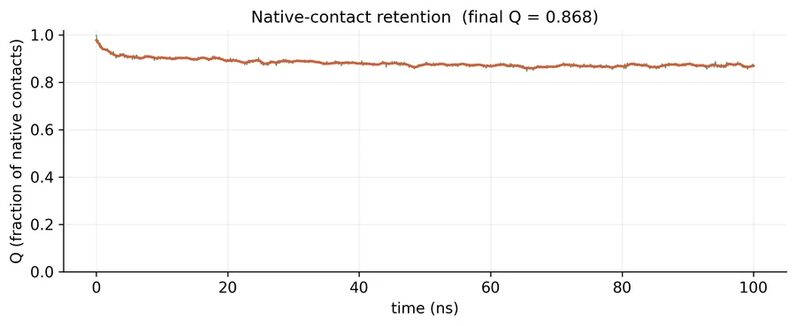
Surface and solvent
How much of the protein faces the water, and how does it interact with it?

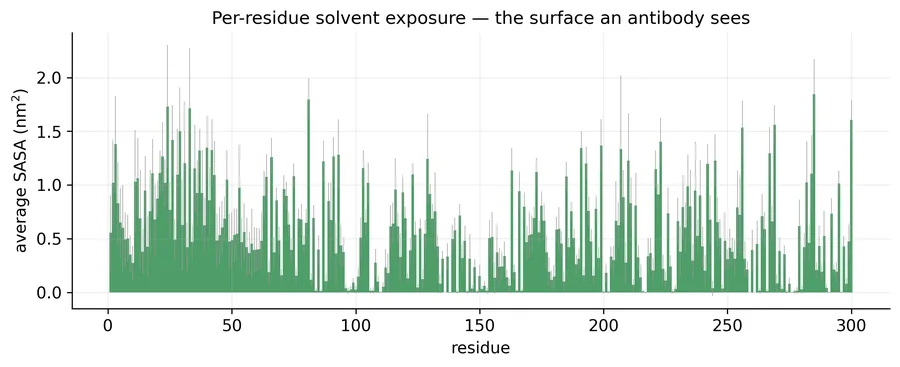
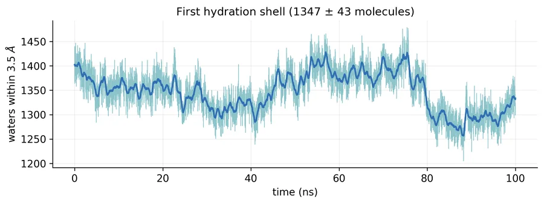
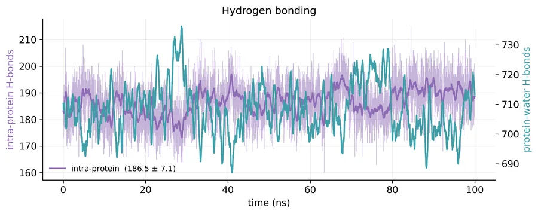
Correlated motion and PCA
Which regions move together, and what are the dominant motions?


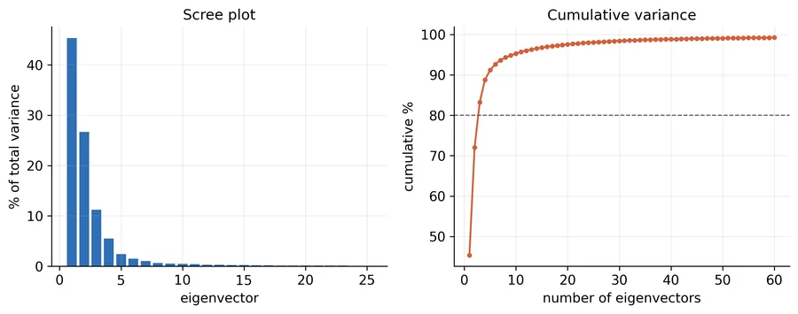

Free-energy landscapes
Which conformations does the protein prefer?


You receive
Trajectories and topologies, every graph as an image and an xmgrace file, structure snapshots at chosen time points, a trajectory movie and a written report.
Click any graph to open it at full resolution, or use the PDF link for print. Up to ten simulations run in parallel, so multi-system studies arrive sooner.